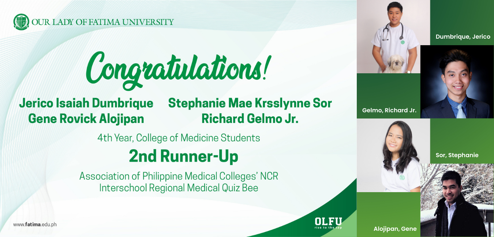

March 21, 2022
In a recent competition hosted by the Association of Philippine Medical Colleges (APMC), four students from the College of Medicine of Our Lady of Fatima University (OLFU) took the 2nd Runner-Up spot in the APMC's NCR Interschool Regional Medical Quiz Bee.
With the most brilliant minds coming from all the medical schools in the National Capital Region-Southern Luzon sector, and with them trying to outdo each other in the APMC-Student Network NCR Regional Regional Quiz Bee, OLFU's Medicine students made waves and "represented" in a fierce "battle of the smarts" last 06 March 2022. For the awesome 2nd Runner Up finish, OLFU congratulates its very own Jerico Isaiah Dumbrique, Gene Rovick Alojipan, Stephanie Mae Kysslyne Sor, and Richard Gelmo Jr. They are all 4th-year medical students who are consistent Academic Scholars, and incumbent Student Council Officers of OLFU's Medical Students' Assembly.
The feat was also made possible through diligent coaching from the College of Medicine professors, and moral support from Dean Reynaldo Olazo.
Dumbrique is a consistent Dean's Lister and Academic Scholar. Currently the President of the MSA Student Council, he is frequently invited as a guest lecturer for the Philippine Pharmacists' Licensure Examinations. A self-professed dog-lover, Dumbrique has a caring nature which will serve him well when he becomes a full-fledged physician.
Alojipan was, formerly, a practicing pharmacist with over two-years' career experience in the Canadian healthcare industry. To further his studies and realize his ultimate dream, he enrolled to OLFU's College of Medicine where, is, currently, an Academic Scholar and the MSA's 4th-year Batch Representative and Overall APMC Student Coordinator.
Sor is a licensed medical technologist who is also excelling in her medicine studies as a consistent Academic Scholar. She is the Graduation Committee Chairperson for the MSA. A proven multi-tasker, Sor still actively pursues her passion for gaming.
Gelmo is a medical laboratory scientist and an Academic Scholar. This future doctor is not just into science but the culinary arts, as well, because he loves to bake. Presently the MSA's Graduation Committee Vice Chairperson, Gelmo is laser-focused on building his medical career.
To Jerico, Gene, Stephanie, and Richard—hats off for the enviable outcome of the APMC Quiz Bee!
OLFU sends its well wishes, as well, when these four valiant competitors face-off against other medical schools for the biggest battle of all— the APMC National Quiz Bee on 03 April 2022.
Rise to the top!